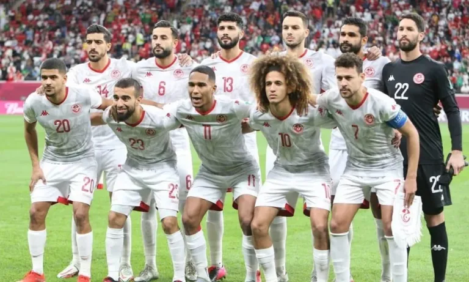

COPAS QUE JÁ PARTICIPOU:
A Seleção da Tunisia já disputou cinco Copas do Mundo em sua história (1978, 1998, 2002, 2006 e 2018). Em 2022 Fará sua 6° participação que será no Catar/Qatar

PREMIAÇÕES QUE JÁ ALCANÇOU
Copa das Nações Árabes, em 1963
Campeonato Africano das Nações, em 2004.
NOME DO TÉCNICO:
Kebaier
PRINCIPAIS JOGADORES
Khazri
Msakni
Khaoui
Tabela de jogos
| Data/Hora | Estádio | Adversário |
|---|---|---|
| 22 nov 2022 / 16h00 | Estádio da Cidade da Educação | Dinamarca |
| 26 nov 2022 / 13h00 | --- | AFC–CONMEBOL |
| 30 nov 2022 / 18h00 | Estádio da Cidade da Educação | França |